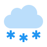

Погода здесь
Санкт-Петербург
12°C
- Ветер 6.0 м/с, ЮЗ
- Облачность Пасмурно
- Давление 754 мм.рт.ст.
- Влажность 65%
- Координаты [59°57′, 30°19′]
Избранное
Мадрид
12°C
- Ветер 8.5 м/с, С
- Облачность Облачно с прояснениями
- Давление 756 мм.рт.ст.
- Влажность 65%
- Координаты [25°45′, 33°37′]
Манчестер
18°C
- Ветер 4.0 м/с, З
- Облачность Гроза
- Давление 755 мм.рт.ст.
- Влажность 39%
- Координаты [51°31′, 62°22′]
Нью-Йорк
6°C
- Ветер 4.8 м/с, В
- Облачность Небольшой дождь
- Давление 750 мм.рт.ст.
- Влажность 34%
- Координаты [58°36′, 94°65′]
Пекин
13°C
- Ветер 3.0 м/с, ЮЗ
- Облачность Ясно
- Давление 757 мм.рт.ст.
- Влажность 93%
- Координаты [38°51′, 22°50′]
Каир
-2°C
- Ветер 1.5 м/с, СВ
- Облачность Снег
- Давление 764 мм.рт.ст.
- Влажность 15%
- Координаты [53°30′, 5°47′]
Рим
16°C
- Ветер 2.0 м/с, СЗ
- Облачность Пасмурно
- Давление 759 мм.рт.ст.
- Влажность 56%
- Координаты [57°53′, 14°26′]